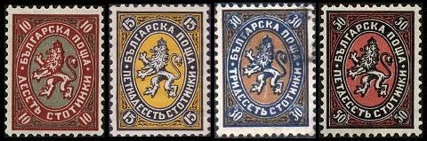

Bulgarian stamps first appeared in 1879. The image above shows the first postage stamp of Bulgaria. The Cyrillic inscription at the top of the oval reads "Bulgarian Postage". The Cyrillic inscription at the bottom of the oval reads "Five Centimes". The central design features the lion from the Bulgarian coat-of-arms. The new Bulgarian postage stamps are very similar in design and size to the Russian Imperial postage stamps of the time. Map of Bulgaria in 1877 When the Second Bulgarian Empire collapsed in 1396, all the Bulgarian territories south of the Danube River became a principality within the Ottoman Empire. The Bulgarian struggle for independence during the 18th and 19th Centuries led to the April Uprising in 1876. The brutality of the Ottomans, in putting down the uprising, resulted in the Russian Empire declaring war on the Ottoman Empire in 1876. The Russian forces, with the aid of many Bulgarian soldiers, were victorious. On March 3, 1878, as a result of the Treaty of San Stefano, Romania, Serbia, and Montenegro became independent kingdoms, and Bulgaria became an autonomous principality within the Ottoman Empire. The self-governing Principality of Bulgaria would not actually be free of Ottoman external control until October 5, 1908, when it became the Kingdom (or Tsardom) of Bulgaria. 1,700th Anniversary of the Edict of Serdica by the Roman Emperor Galerius. Galerius (Ruled: 305-311) was a native of Serdica (present day Sofia, Bulgaria). (Souvenir Sheet issued in 2011) Of course, Bulgaria has an impressive (recorded) history, dating back to the 5th Century B.C., as part of the Ancient Greek geographical area known as Thrace, the Thracian province of the Roman Empire, and even as an Empire in its own right. These historical roots have been well documented on the postage stamps of Bulgaria. Since the first Bulgarian postage stamp of 1879, more than 5,000 different postage stamps have been issued, with most of them being reasonably affordable. Collecting Bulgarian stamps can offer many years of enjoyment and can result in a very impressive looking collection. The subject matter of Bulgarian commemorative stamps also offers many different thematic collecting possibilities. 2,500 Years of Bulgarian Art. (Commemorative Stamps issued in 1964) Reviews of many of the postage stamp issues of Bulgaria, as well as the occasional historical article, will eventually appear in the page link section at the upper right. Illustrating and describing ALL the stamps of modern Bulgaria is far beyond the scope and capability of this website. Fortunately for everyone, someone has already done that. Here is a link to an excellent website illustrating all the stamps of Bulgaria.
Commemorative Bulgarian stamps first appeared in 1896, on the 20th Anniversary of their becoming a self-governing principality within the Ottoman Empire. The four commemorative stamps shown above (Sc. #43-46) were issued on February 2, 1896 to celebrate the upcoming Baptism of Prince Boris. The common designs of the four stamps feature the Coat of Arms of Bulgaria. Boris Klemens Robert Maria Pius Ludwig Stanislaus Xavier (1894-1943) was the eldest son of Prince Regnant Ferdinand of Bulgaria (1861-1948) and Princess Marie Louise of Bourbon-Parma (1870-1899). The two year old prince was baptized in the Eastern Orthodox Church on February 11, 1896. His godfather was Tsar Nicholas II of Russia. The two commemorative stamps shown above (Sc. #53-54) were issued on April 20, 1901 to celebrate the 25th Anniversary of the Insurrection for Independence in April 1876, also called the April Uprising. The common designs of the two stamps feature a Cherry-Wood Cannon. The Bulgarians used 52 Cherry-Wood Cannons during the 1876 April Uprising. These wooden cannons, though ineffective in battle, became one of the symbols of the Bulgarian struggle for independence from the Ottoman Empire.
The Defense of the Eagle's Nest by Alexey Popov (1858-1917)
The first pictorial definitive Bulgarian stamps appeared in 1911, and from that point forward, almost all the definitive stamps of Bulgaria have been large-format pictorial or portrait stamps. The period between 1911 and 1928 would also witness the unexpected departure of one monarch and the ascension of another monarch. The twelve major-type pictorial and portrait definitive Bulgarian stamps shown above were issued between 1911 and 1915. Their designs are as follows. 01 S. - Tsar Assen's Tower. The fortress of Tsar Asen II (Reigned: 1218-1241), who reigned during the Second Bulgarian Empire. The Church of the Holy Mother of God is all that remains of the original fortress today, and it is still in use, as a Bulgarian Orthodox Church. 02 S. - Tsar Ferdinand. 03 S. - City of Trnovo. The city, now known as Velìko Tǎ́rnovo, is famous for its many churches and for being the residence of the Bulgarian nobility during the Middle Ages. 05 S. - Tsar Ferdinand. 10 S. - Tsar Ferdinand. 15 S. - Isker River. 25 S. - Tsar Ferdinand. 30 S. - Rila Monastery. This 10th Century monastery, founded by Ivan of Rila (876-946), is the largest Eastern Orthodox monastery in Bulgaria, and it is still in use today. 50 S. - Tsar Ferdinand and his sons. 01 L. - Tsar Ferdinand in the robes of the ancient tsars. 02 L. - Monastery of the Holy Trinity. This Eastern Orthodox monastery, near the town of Veliko Tarnovo, was constructed during the Middle Ages. 03 L. - View of Varna. This Black Sea seaport, originally called Odessos, was founded almost 3,000 years ago by the Thracians. It is believed that the area was settled far earlier than that though, as gold jewelry, dating back to 4,600 B.C. has been found there. The Scott catalog attributes, for stamps that are engraved and perforated 12, are as follows. 01 S. (1911 - Sc. #89) - Myrtle Green. 02 S. (1911 - Sc. #90) - Carmine & Black. 03 S. (1911 - Sc. #91) - Lake & Black. 05 S. (1911 - Sc. #92) - Green & Black. 10 S. (1911 - Sc. #93) - Deep Red & Black. 15 S. (1911 - Sc. #94) - Brown Bister. 25 S. (1911 - Sc. #95) - Ultramarine & Black. 30 S. (1911 - Sc. #96) - Blue & Black. 50 S. (1911 - Sc. #97) - Ocher & Black. 01 L. (1911 - Sc. #98) - Chocolate. 02 L. (1911 - Sc. #99) - Dull Purple & Black. 03 L. (1911 - Sc. #100) - Blue Violet & Black. The Scott catalog attributes, for stamps that are re-engraved and perforated 11 1/2 or perforated 14, are as follows. 01 S. (1915 - Sc. #114) - Dark Blue Green. 05 S. (1915 - Sc. #115) - Green & Brown Violet. 10 S. (1915 - Sc. #116) - Red Brown & Brownish Black. 15 S. (1915 - Sc. #117) - Olive Green. 25 S. (1915 - Sc. #118) - Indigo & Black. 30 S. (1915 - Sc. #119) - Olive Green & Red Brown. 01 L. (1915 - Sc. #120) - Dark Brown. The thirteen major-type pictorial and portrait definitive Bulgarian stamps shown above were issued between 1921 and 1923. Their designs are as follows. 10 S. - View of Sofia. 20 S. - Monument to Alexander II in Sofia. Known as the "Liberator", Tsar Alexander II of Russia (Lived: 1818-1881, Reigned: 1855-1881) liberated Bulgaria from Ottoman rule during the Russo-Turkish War of 1877-1878. 25 S. - Tsar Boris III. 50 S. - View of Trnovo. 75 S. - Monastery at Shipka Pass. The Shipka Memorial Church is a 19th Century Bulgarian Orthodox church. 01 L. - Tsar Boris III. 02 L. - Harvesting grain. 03 L. - Tsar Assen's Tower. 05 L. - Rila Monastery. 10 L. - Tsar Boris III. The Scott catalog attributes are as follows. 10 S. (1921 - Sc. #158) - Blue Gray. 20 S. (1921 - Sc. #159) - Deep Green. 25 S. (1922 - Sc. #160) - Blue Green. 50 S. (1921 - Sc. #161) - Orange. 50 S. (1923 - Sc. #162) - Dark Blue. 75 S. (1921 - Sc. #163) - Dull Violet. 75 S. (1923 - Sc. #164) - Deep Blue. 01 L. (1921 - Sc. #165) - Carmine. 01 L. (1922 - Sc. #166) - Deep Blue. 02 L. (1921 - Sc. #167) - Brown. 03 L. (1921 - Sc. #168) - Brown Violet. 05 L. (1921 - Sc. #169) - Light Blue. 10 L. (1921 - Sc. #170) - Violet Brown. The four Bulgarian postage due stamps shown above were overprinted and re-valued during 1924. The Scott catalog attributes are as follows. 10 S. on 20 S. (1924 - Sc. #182) - Salmon, Yellow. 20 S. on 05 S. (1924 - Sc. #183) - Gray Green, Emerald. 20 S. on 10 S. (1924 - Sc. #184) - Violet. 20 S. on 30 S. (1924 - Sc. #185) - Orange, Red Orange. The four pictorial and portrait definitive Bulgarian stamps shown above were overprinted and re-valued during 1924. The Scott catalog attributes are as follows. 10 S. on 01 S. (1924 - Sc. #186) - Black. 01 L. on 05 S. (1924 - Sc. #187) - Emerald. 03 L. on 50 S. (1924 - Sc. #188) - Dark Blue. 06 L. on 01 L. (1924 - Sc. #189) - Carmine. The seven heraldic, pictorial, and portrait definitive Bulgarian stamps shown above were issued in 1925. Their designs are as follows. 10 S. - Lion of Bulgaria. 15 S. - Lion of Bulgaria. 30 S. - Lion of Bulgaria. 50 S. - Lion of Bulgaria. 01 L. - Tsar Boris III. 02 L. - New Sofia Cathedral. 04 L. - Harvesting. The Scott catalog attributes are as follows. 10 S. (1925 - Sc. #191) - Red & Blue. 15 S. (1925 - Sc. #192) - Carmine & Orange. 30 S. (1925 - Sc. #193) - Black & Buff. 50 S. (1925 - Sc. #194) - Chocolate. 01 L. (1925 - Sc. #195) - Dull Green. 02 L. (1925 - Sc. #196) - Dark Green & Buff. 04 L. (1925 - Sc. #197) - Lake & Yellow. The five heraldic, pictorial, and portrait definitive Bulgarian stamps shown above were issued in 1926. Their three common designs are as follows. Cathedral of Sveta Nedelya in Sofia, after bombing. Tsar Boris III. Lion of Bulgaria. The Scott catalog attributes are as follows. 50 S. (1926 - Sc. #198) - Gray Black. 01 L. (1926 - Sc. #199) - Gray, Green. 02 L. (1926 - Sc. #201) - Olive Brown. 06 L. (1926 - Sc. #202) - Deep Blue & Pale Lemon. 10 L. (1926 - Sc. #203) - Brown Black & Brown Orange.  The four re-drawn Lion-of-Bulgaria-type Bulgarian stamps of 1881 shown above were issued in 1927 and 1928. The Scott catalog attributes are as follows. 10 S. (1927 - Sc. #207) - Dark Red & Drab. 15 S. (1927 - Sc. #208) - Black & Orange. 30 S. (1928 - Sc. #209) - Dark Blue & Bister Brown. 50 S. (1928 - Sc. #210) - Black & Rose Red.